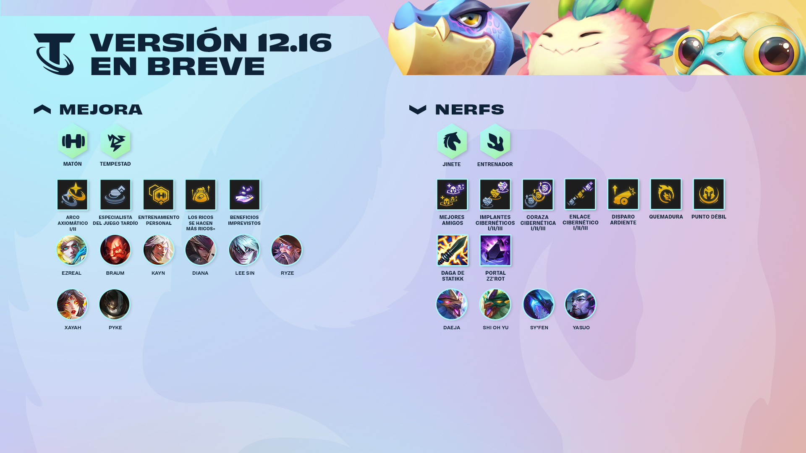
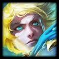
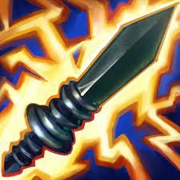

Resumen de la versión
En esta parte se puede apreciar un resumen de lo que traera la nueva versión de TFT

Mejoras
1.- A Ezreal no le está yendo bien como portador de objetos ni como carry de actualización. Al ajustarlo, permitiremos que Ezreal lance su habilidad con mayor frecuencia y que portar objetos como Espadafuria de Guinsoo y Daga de Statikk sea más efectivo.
- Daño de ataque de Ezreal: 40 ⇒ 35
- Velocidad de ataque de Ezreal: 0.6 ⇒ 0.65

Nerfs
1.- Daga de Statikk ha sido un éxito inesperado en todo el set y su daño básico ofrece un mayor impacto en el juego temprano.
- Daño mágico de Daga de Statikk: 60 ⇒ 50
- Daño mágico de Favor de Statikk Radiante (Radiante): 100 ⇒ 75
